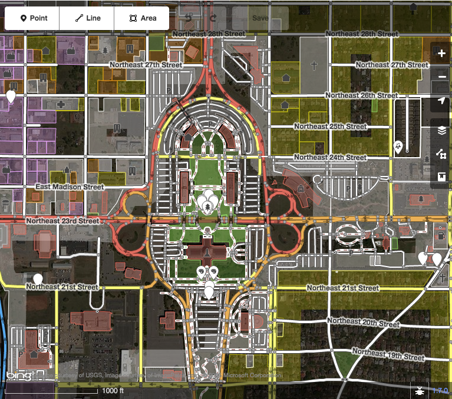
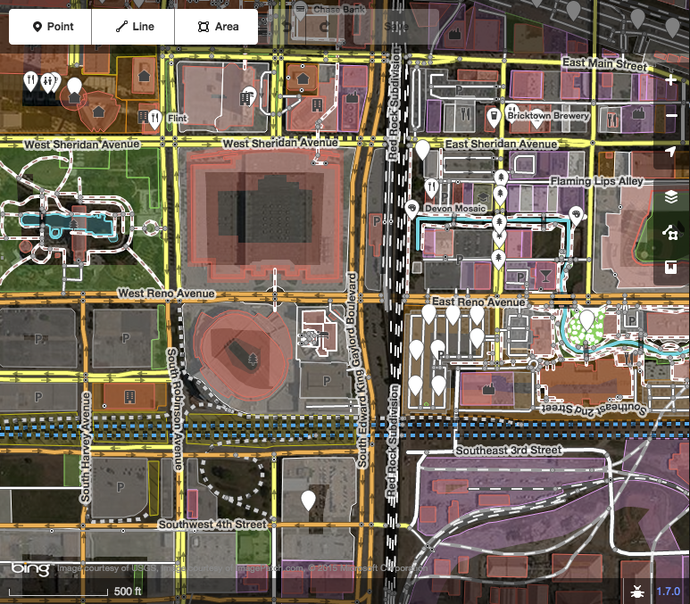
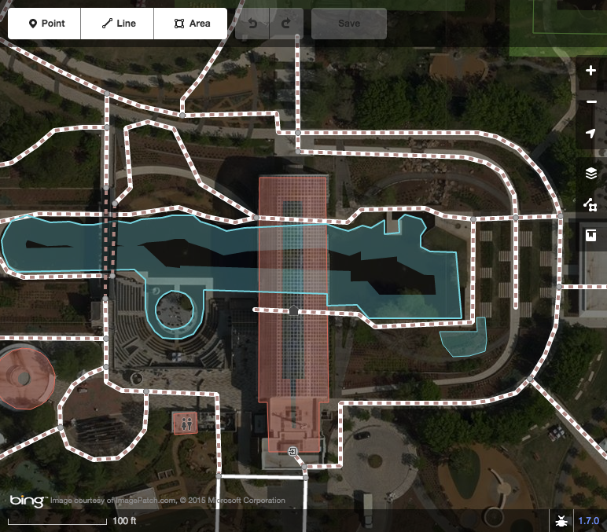
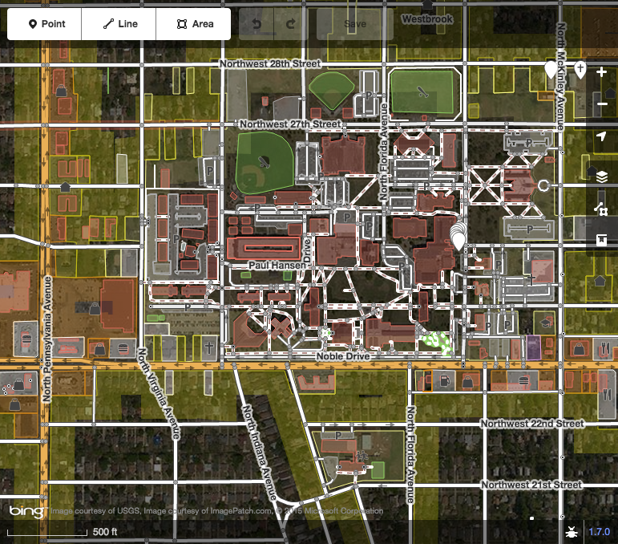
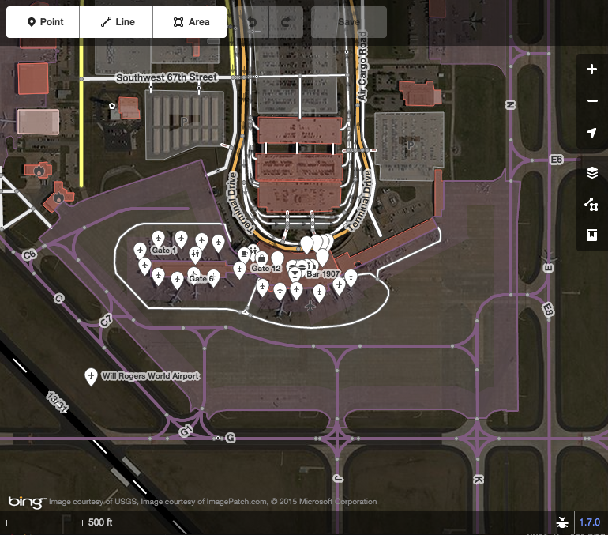
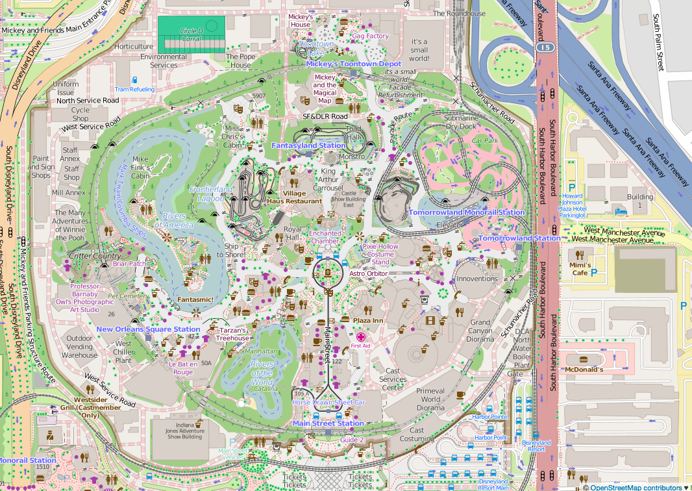
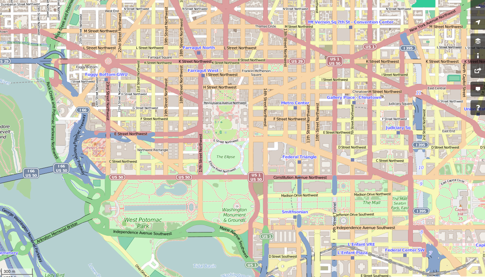
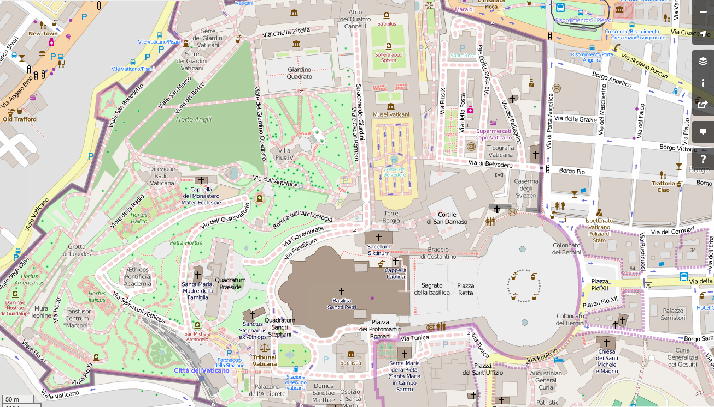
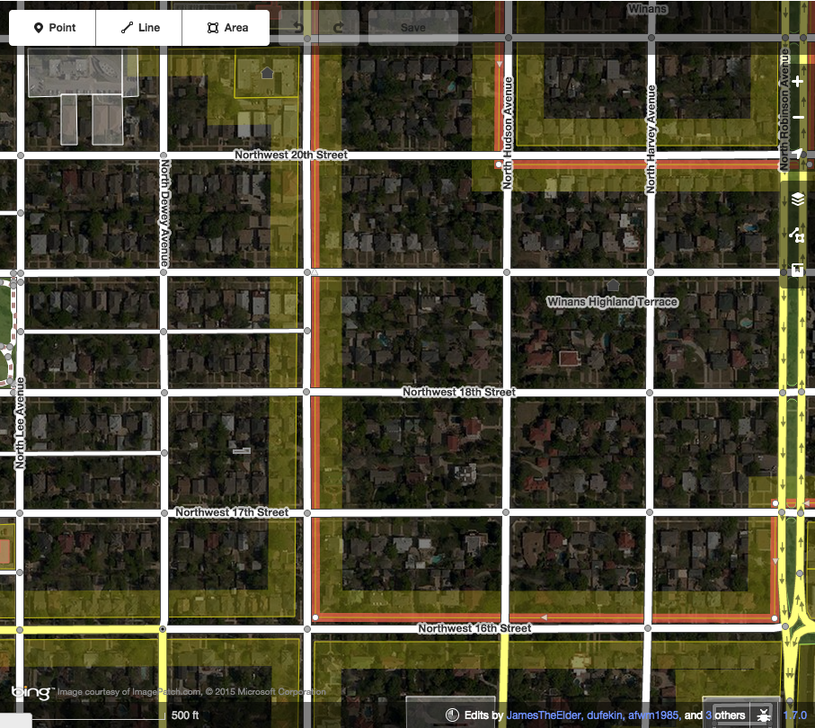

let's learn about osm
get your laptops out!
what will you get out of this?
- what is osm?
- why osm?
- learn how to edit a map
- create an account on osm
- explore!
osm is a free geographic dataset of natural and man-made features on the earth's surface
osm is built by a community of mappers that contribute and maintain data about roads, trails, cafés, railway stations, and much more, all over the world.
tldr; wikipedia of maps
okc capital
downtown okc

lake hefner
myriad gardens
ocu campus
will rogers "world" airport
didn't want to bore...there's a ton of features
disneyland
washington d.c.
vatican
why osm?
geo data is not free in many parts of the world (gov agencies)
osm emphasize local knowledge. see a mistake, correct it
you have an idea with geo, you can get the data you need and use it*
where do i start?
iD
things to start out with
- add stores, cafes, restaurants: use "point"
- add buildings: use "area"
- add roads: use "line"
improve osm with micro-tasking
guidelines
add useful changeset comments
help!you can add hashtags (#maptimeOKC) to the commits
don'ts
- copying data from other maps (google, bing, others)
- deleting a bunch of data (unless it's wrong)
- guessing
- removing tags you don't understand
- tracing from outdating imagery
- deleting history
dos
- maping what's on the ground
- keeping straight ways straigh
- marking estimations with fixme
- asking questions on osm mailing list
- having fun!
remember: the map isn't finished yet. the world is a big place. how does your neighborhood look on osm?
seriously, let's check it out!